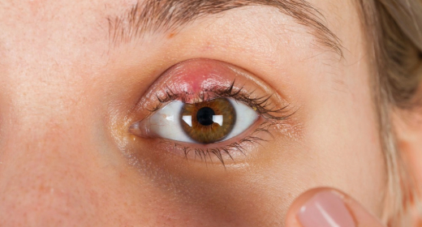

A quick minor procedure to remove a persistent eyelid lump caused by a blocked oil gland, with minimal discomfort and no visible scar.

Eyelid lump A blocked oil gland in the lid
A chalazion is a firm, painless lump in the eyelid. It forms when one of the small oil glands along the edge of the lid becomes blocked and the trapped oil causes swelling.
It is different from a stye, which is a painful infection at the base of an eyelash. A chalazion often starts after a stye or with eyelid inflammation (blepharitis).
Many chalazia shrink with warm compresses and lid cleaning. Lumps that last for weeks, keep coming back or press on the eye can be removed with a simple procedure.
At a glance
A chalazion usually causes:
A firm bump on the upper or lower eyelid.
Especially in the early days.
Mild discomfort on blinking.
Can be noticeable and affect appearance.
New lumps may appear in other glands.
A large lump can press on the eye.
Removal is recommended when a chalazion has not improved after several weeks of warm compresses, is large, affects vision or keeps coming back.
Warm compresses help most in the first weeks. Apply a clean warm cloth for 10 minutes, 3–4 times a day, then massage gently.
Removal is usually considered when the lump
 Consultant Ophthalmologist
Dr. Waleed Bunami
Meet the team
Consultant Ophthalmologist
Dr. Waleed Bunami
Meet the team
Usually removed from the inside of the eyelid, so no scar shows.
A minor sterile procedure in our clinic.
Unusual or repeated lumps can be sent for testing.
Performed by an experienced consultant.
We examine the lump and the eyelid margin.
A small injection numbs the eyelid.
The lid is turned and the lump is drained from the inside.
An eye pad is applied for a few hours and you go home.
Keep the pad on as advised. Mild bruising is normal.
Use antibiotic ointment. Swelling goes down.
The eyelid looks normal again in most cases.
Lid hygiene helps prevent new lumps.
Do
Avoid
No. It is a blocked gland, not an infection that spreads to others.
No. Squeezing can cause infection and scarring. Use warm compresses instead.
The cut is usually made on the inside of the lid, so there is no visible scar.
It can, especially with oily eyelids or blepharitis. Daily lid cleaning reduces the risk.
We’ll check the lump and recommend whether compresses or removal is best for you.
Sunday to Friday · 9 am – 1 pm, 4 pm – 9 pm